IB Docs (2) Team
IB Docs (2) Team

Unit 3.3(3) Macroeconomic objectives: inflation and deflation
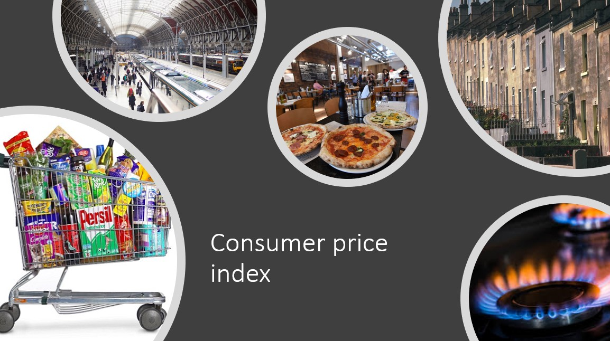
The overall price level or average price level of an economy is constantly changing. Managing the change in the average price level and achieving a low and stable inflation rate is a key objective of government macroeconomic policy. All countries experience changes in the average level of prices over time and when these changes become unstable it can be very damaging to the economy.
- Measuring the inflation rate using a consumer price index (CPI) (HL only)
- Problems of measuring inflation
- Causes of inflation: demand-pull and cost-push inflation
- Costs of a high inflation rate
- Causes of deflation
- Costs of deflation
- The Phillips Curve (HL only)
Revision material
 The link to the attached pdf is revision material from Unit 3.3(3) Macroeconomic objectives: inflation and deflation. The revision material can be downloaded as a student handout.
The link to the attached pdf is revision material from Unit 3.3(3) Macroeconomic objectives: inflation and deflation. The revision material can be downloaded as a student handout.
Changes in the price level
The overall price level or average price level of an economy is constantly changing. Managing the change in the average price level and achieving a low and stable inflation rate is a key objective of government macroeconomic policy. All countries experience changes in the average level of prices over time and when these changes become unstable they can be very damaging to the economy. For example, in the last 10 years, a 10 million per cent rate of hyperinflation in Venezuela or a daily rate of inflation in Zimbabwe of 98 per cent meant these economies could not really function.
Inflation
Inflation is the sustained increase in the general level of prices in an economy. For example, if an economy has a current rate of inflation of 1.5% it means that on average prices are 1.5% higher now than they were 12 months ago.
Disinflation
Disinflation is the fall in the rate of inflation in an economy. This means the rate at which the general level of prices is increasing falls. For example, a fall in the rate of inflation in the economy from 2.1%. to 1.5% would be disinflation.
Deflation
Deflation is the sustained decrease in the general level of prices in an economy. If a country has a rate of inflation of -1.6% then it has deflation and the average price level of the economy is falling.
Measuring inflation
Measuring the rate of inflation is a difficult thing to do in an economy because of the number of goods and services being traded and the number of transactions taking place. Prices are constantly changing in the economy which also makes measuring inflation problematic. Governments use a price index to measure the rate of inflation and the example that follows is the method used by European Union to measure inflation and is called the Harmonised Consumer Price Index (HCPI).
Harmonised consumer price index (CPI)
This is how CPI is calculated:
- The European Central Bank choose a representative basket of goods the average consumer buys.
- The index has 700 products in the basket and the prices of the goods in the basket are measured monthly.
- The index is weighted based on consumer expenditure. The higher the proportion of consumer expenditure on a product the higher its weighting will be and the greater impact its price change will have on the price index. Petrol price changes will have a greater impact on the index than a change in the price of toothpaste because most consumers spend a greater proportion of their income on petrol.
- The annual percentage change in the index is the inflation rate.
Constructing a weighted price index (HL only)
This is how the inflation rate is calculated using a weighted price index:
Step 1 Goods and services are selected to be put into the index, and they are entered under different product categories like those set out in the table below. About 700 products are used in the European CPI.
Step 2 Index numbers are used to calculate how the prices of each category of goods have changed. An index number shows the relative change in the value of a variable between two points in time. The point in time is called the base year (this is given the value 100) and this is compared to another point in time called the current year. For example, if the price of bread in the base year is €1.20 and in the following year (current year) it is €1.30 then the index would be:
current year price / base year price x 100 = price index value
€1.30 / $1.20 x 100 = 108.3
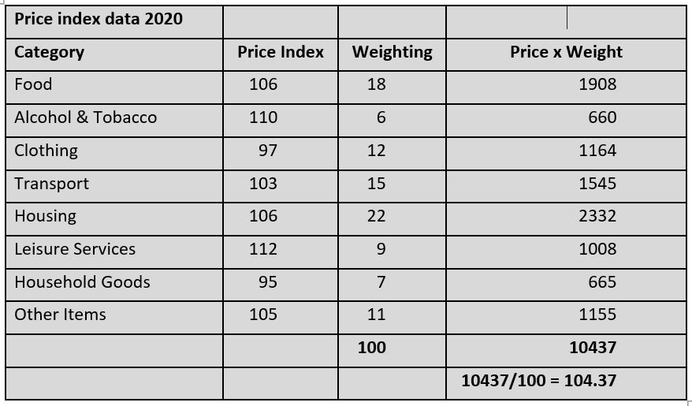
Step 3 Once the index number for each category of good has been calculated we then assign weights to each category based on the percentage of income the average consumer spends on the category. In the table below the average consumer spends 22 per cent of their income on housing so housing is given a weighting of 22. The average consumer only spends 6 per cent of their income on alcohol and tobacco so the weighting for this is 6.
Step 4 Each category of good in the price index is multiplied by its weighting. The sum of price multiplied by weighting for each category divided by 100 gives the weighted index.
Σ (weight x price)/100 = weighted index
In the table, the weighted index for 2020 is 104.37
Step 5 The rate of inflation for 2020 is calculated from the percentage change in the weighted index from 2019 to 2020. The weighted index for 2019 is 101.6 so the rate of inflation is calculated as:
104.37 – 101.6 / 101.6 = 2.73%
Inquiry case example - Constructing a price index
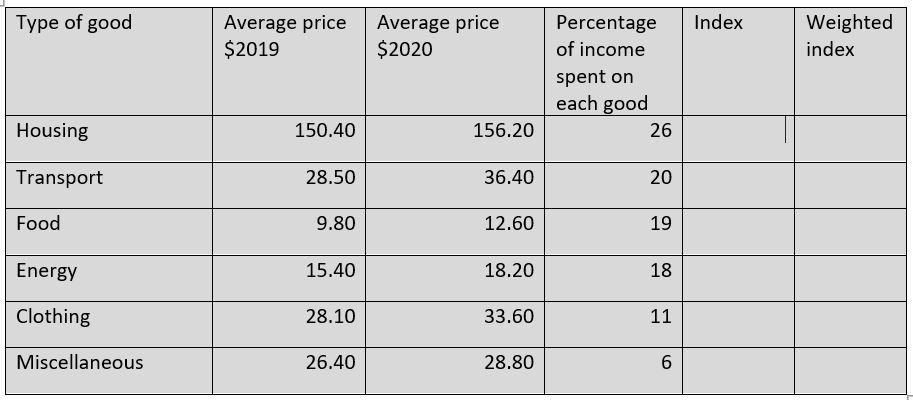
Measuring inflation is done using a weighted price index. This is a difficult measurement for statisticians and economists, but it is very important to get a precise measure of inflation.Getting an accurate measurement for inflation is crucial for governments making macroeconomic policy decisions, for businesses making wage and pricing decisions and for households budgeting their finances. It is also important to measure inflation as precisely as possible to accurately measure macroeconomic data such as real GDP and for economists to model the economy for forecasting.
 Worksheet questions
Worksheet questions
Questions
a. Outline the difference between inflation and disinflation. [2]
Inflation is an increase in the average price level in the economy. Disinflation is a fall in the rate of inflation in an economy.
b. Outline how the weights are set in a weighted price index. [2]
The weights in a price index are based on the percentage of consumer expenditure on a particular category of goods. In the table, the average consumer spends 26% of their income on housing.
c. Calculate the weighted price index value for 2020 based on the data in the table. [4]
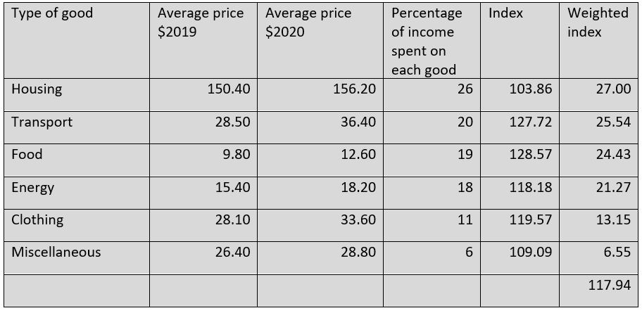
Method:
- Calculate the index number for each good use the equation: average price 2020 / average price 2019 x 100
- eg. Housing = 156.20 / 150.40 x 100 = 103.86
- Calculated the weighted index for each good using the equation: index of good x weighting
- eg. Housing 103.86 x 0.26 = 27.00
- Sum the weighted index for each good: 27.00 + 25.54 + 24.43 + 21.27 + 13.15 + 6.55 = 117.94
d. The price index for 2019 was 106.72. Calculate the rate of inflation for 2020. [2]
117.94 - 106.72 / 106.72 = 10.51%
Investigation
Research into the method used to calculate the rate of inflation in your country.
Problems of measuring inflation
We have already considered the challenge of measuring the rate of inflation from the sheer scale of the task of collecting price data that is constantly subject to change. Here are some more specific problems of measuring inflation.
Average consumer
The inflation rate is an average based on the spending patterns of the average consumer. This consumer does not exist in reality so different inflation rates will exist for different consumers. Young people who eat out in restaurants will have a different inflation rate compared to families that are more likely to eat at home because the price changes in restaurants are likely to be different to the price changes of people who primarily buy their food in supermarkets.
Regional variation
Prices differ throughout the economy and so will inflation rates. Capital cities like Paris and Beijing will experience different inflation rates compared to provincial towns in those countries.
Types of retailer
Prices vary depending on where you buy a product. Large supermarkets will be much cheaper than small corner shops and the inflation rates between these different types of retailers are going to differ as well. This makes deciding which retailers to use in constructing the index problematic.
Change in the quality of goods
The quality of goods generally rises over time and this is not accounted for in the index. Computers are of better quality now than they were 5 years ago, but this will not necessarily be reflected in their price. This means inflation tends to overstate price increases because it does not allow for improvements in product quality.
Variations between countries
Different countries use different measures of inflation. The US consumer price index, for example, includes the change in the price of owner-occupied housing which is not included in the EU’s CPI measure.
One-off changes in price
Significant one-off changes in the price of a highly weighted good in the index can distort the inflation rate. A big increase in the price of petrol will cause a significant rise in the index although the price changes of other goods in the index may be relatively small. Economists try to factor this in by removing items with big, one-off price changes that distort the index. This is called the core or underlying rate of inflation.
Predicting the rate of inflation
Economists try to forecast the future rate of inflation and they will look closely at factors that could build inflation pressures like an increase in the price of oil or accelerating economic growth. They also look at indices like the producer price index which measures the percentage change in prices paid by firms for inputs like raw materials. If the producer price index is rising, then there is likely to be a rise in the rate of inflation.
Turkey has had a problem with inflation for many years and it has averaged an inflation rate of over 10% for the last five years. In 2018 the Turkish rate of inflation peaked at nearly 30%. The high and unstable inflation rate in Turkey makes it a difficult figure to measure.
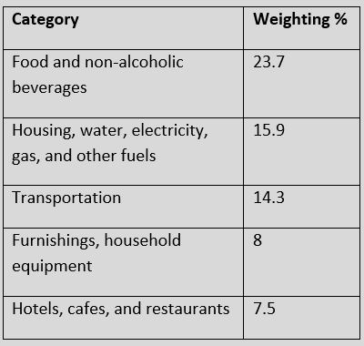
Turkey’s current consumer price index (CPI) value is 460 with a base year value of 100 starting in 2004. The weighting value of the 5 most significant product categories in Turkey’s CPI is set out in the table opposite.
Worksheet questions
Question
Explain three problems of measuring inflation in the Turkish economy using a consumer price index(CPI). [10]
Answers might include:
- Definitions of inflation and consumer price index.
- A diagram is not required for this question.
- An explanation that the rate of inflation in an economy is an average and will vary in both geographic and demographic terms in Turkey's economy.
- An explanation that the consumer index data will be affected by the type of retailer used and the area of the country where price data is collected from.
- An explanation that inflation data can be distorted by one-off price changes of significant items in the index.
- An explanation that the quality of goods increases over time and this is not accounted for in the price index data.
Use any three problems from the list.
Investigation
Research the problems of measuring inflation in another country like Turkey when prices are so unstable.
Causes of inflation
At the macro level, the causes of inflation can be looked at from a demand-side and supply perspective. In reality, it is difficult to separate them as causes of inflation because the factors that affect aggregate demand and aggregate supply are constantly changing. Economists do, however, often focus on periods of high inflation caused by changes either in aggregate demand or aggregate supply.
Demand-pull inflation
Definition
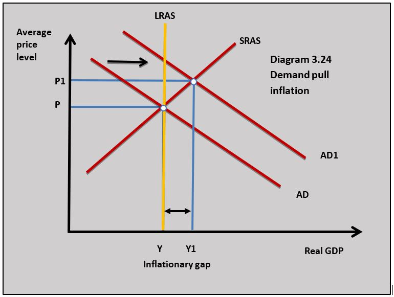
Demand-pull inflation occurs when a rise in aggregate demand in the economy causes (pulls) the price level in the economy to increase. Diagram 3.24 illustrates how a rise in aggregate demand from AD to AD1 leads to a rise in the average price level from P to P1.
Inflationary gap
Periods of demand-pull inflation often lead to an inflationary gap. The diagram also shows an inflationary gap where the short-run equilibrium income is at a level of real GDP above the full employment level of income. This means actual output in the economy is above potential output. It is quite difficult to understand how this can happen. Remember that potential output or full employment is not zero unemployment because there are always some unemployed people and unused capital even when the economy is at full employment. In the short term, actual output can be above potential output and an inflationary gap occurs.
The following factors can trigger an increase in aggregate demand which can lead to demand-pull inflation:
- Reduced interest rates raise the level of consumption and investment.
- A rise in house prices makes consumers feel wealthier and raises consumption.
- High levels of business and consumer confidence stimulate consumption spending and investment.
- Expansionary fiscal policy by the government is trying to stimulate economic growth.
Cost-push inflation
Definition
Cost-push in
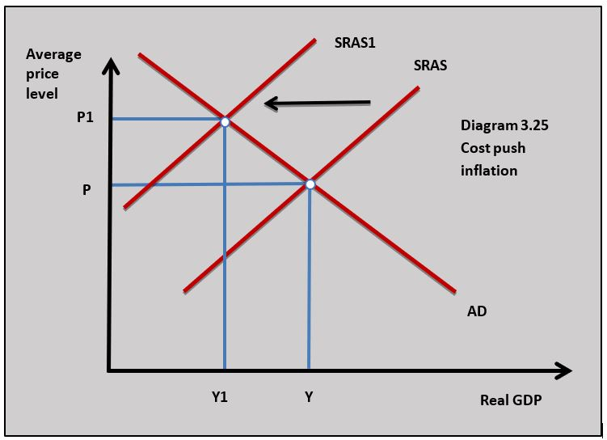
flation occurs when there is a reduction in the short-run aggregate supply in the economy and the price level is pushed up by rising costs. Diagram 3.25 illustrates how rising costs cause the short-run aggregate supply curve to shift from SRAS to SRAS1 leading to a rise in the average price level from P to P1 and a fall in the real output from Y to Y1.Reasons for cost-push inflation
The short-run aggregate supply curve will shift to the left if the cost of any of the factors of production increases.
Wage push inflation
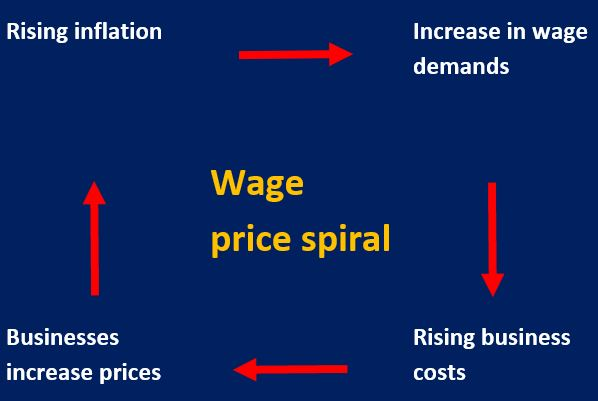
When wage rates rise faster than output, unit or average costs rise, and this can lead to higher prices if firms choose to pass on the increase in unit costs as a higher price. This would happen if a trade union in a major industry like electricity supply negotiated a wage increase of 10 per cent and labour productivity only increased by 5 per cent.A wage-price spiral can be a dangerous situation for an economy where workers respond to a rise in inflation by asking for a wage increase which in turn feeds through to higher prices.
Raw material costs
Cost-push inflation can be caused by rising commodity prices which increase the cost of manufactured goods. Commodity price increases in oil, wheat, rice and metals have all triggered periods of cost-push inflation in economies in the past. Historically, oil price increases have caused significant periods of cost-push inflation. Where materials and other inputs are imported a fall in the exchange rate can trigger cost-push inflation as import prices rise with a lower exchange rate.
Capital costs
If the price of machinery and equipment used by firms increases, this can lead to higher prices. Governments often respond to higher inflation by raising interest rates, but this can lead to higher business costs as firms have to pay more interest on loans they have taken out to fund investment spending.
Entrepreneurial profit
Businesses can add to their profits by increasing prices by more than their increase in costs. In industries dominated by large firms with significant market power, prices can increase because of a lack of competition. This is particularly true where a monopoly dominates a market. When you consider markets like energy, water and public transport are often dominated by large firms, it is possible to see how inflation can occur if they increase prices because demand is price inelastic and household spending on the products they sell is a high proportion of household income.
Russia’s Ruble fell to 69.40 against the dollar yesterday reaching a two-year low. The falling price of oil combined with the threat of US sanctions have been drivers of the Ruble’s depreciation. The fall in the currency has had a big impact on business costs for Russia’s manufacturing sector.
As the Ruble has fallen the price of imported raw materials and components has increased significantly and this has led to rising prices and a spike in inflation. Even service sector businesses that do not import inputs directly are experiencing rising costs as a knock-on effect from the higher input prices charged by manufacturers.
Questions
a. Define the term costs push inflation. [2]
Cost-push inflation occurs when there is a reduction in the short-run aggregate supply in the economy and the price level is pushed up by rising costs.
b. Using a diagram explain how a fall in the value of the ruble on foreign exchange markets can lead to inflation. [4]
 As the value of the Russian ruble falls this will lead to an increase in import prices into Russia. Higher import prices will increase business costs as imported inputs become more expensive and the price of imported consumer goods goes up.
As the value of the Russian ruble falls this will lead to an increase in import prices into Russia. Higher import prices will increase business costs as imported inputs become more expensive and the price of imported consumer goods goes up.
c. Explain the difference between cost-push and demand-pull inflation. [10]
Answers might include:
- Definitions of inflation, cost-push inflation and demand-pull inflation.
- Diagrams to show cost-push and demand-pull inflation (the diagram in part b can be used for cost-push inflation).
- An explanation that cost-push inflation is caused by the rising cost of factors of production such as wages, raw material inputs, falling exchange rate, capital cost and business profits.
- An explanation that rising aggregate demand in the economy cause demand-pull inflation. This could be because of rising consumption, investment, government spending and net exports.
Investigation
Research other countries that have experienced significant currency depreciation to see whether this has led to a rise in inflation.
The effects of inflation
Inflation is present in nearly all of the world’s economies and many economists see low, stable inflation as beneficial. However, if inflation increases to high, unstable levels it leads to significant macroeconomic problems. Countries like Venezuela and Zimbabwe which have both experienced hyperinflation in the last 15 years have seen their economies collapse because of the price level increasing at such a fast rate.
Impact on the cost of living
As the price level rises in the economy the cost to households increases. If the price level rises faster than the increase in household incomes, then households will see a fall in their real incomes and material living standards. This type of effect is normally associated with cost-push inflation.
Redistribution of income
Fixed incomes
Inflation has a negative effect on the disposable incomes of households whose wages cannot keep up with the increase in the average price level. These households are often made up of pensioners, people on government benefits and low-skilled workers in weak bargaining positions in the labour market. In many countries, households with below-average incomes saw their real wages fall after the financial crisis between 2009 and 2018 because the price level was rising faster than their wages.
Borrowers and lenders
Inflation means the real value of money repaid by borrowers is worth less than the money they borrowed from lenders. If someone borrows $100,000 at 10 per cent inflation then the real value of the money they repay after one year will be $90,000. There is a redistribution of income from lenders to borrowers. Lenders can protect themselves against this by charging a rate of interest above the rate of inflation:
Interest rate 6% - Inflation rate 4% = 2% real rate of interest
The redistribution of income tends to occur if there is a sudden jump in the rate of inflation and lenders cannot act to protect themselves by increasing interest rates. This is called unanticipated inflation and at higher rates of inflation, there is a greater probability of unanticipated inflation because changes in the price level become more volatile. For example, when inflation rises above 10 per cent it becomes unstable and there is more likely to be unanticipated inflation. The increased risk unanticipated inflation poses to people saving money in banks means that inflation can lead to a fall in the savings in the economy which reduces the funds available for future investment.
Investment
One implication of higher real interest rates which come with high inflation is that the cost of borrowing money for investment projects increases and this leads to a fall in the level of investment. High inflation also makes the business environment more unstable which increases the risk element of investment projects and this also leads to a fall in investment. If inflation leads to a fall in the level of investment, then the long-term growth prospects of the economy will be adversely affected.
Reduced international competitiveness
If a country’s inflation rate is higher than its main international competitors then the country’s firms will struggle to compete in international markets leading to a fall in exports and a rise in imports. This could lead to a balance of payments current account deficit. The current account deficit can lead to a fall in the country’s exchange rate and this adds to inflation as import prices rise. Venezuela’s inflation rate is significantly higher than its main trading partners in South America which has led to a fall in its international competitiveness amongst if main international competitors.
Business costs
An increase in the rate of inflation means that firms have to spend time changing prices as their costs increase. The time they spend changing prices represents an additional cost to business. This is particularly significant when inflation goes to very high levels and firms are forced to continuously change prices because they will lose money if they do not raise prices as costs rise. An economy with price stability and a 2 per cent rate of inflation will mean most firms will be comfortable changing their prices once a year. If inflation reaches levels above 10 per cent then prices need to be changed much more frequently. If inflation reaches 1000 per cent prices will need to be changed every day.
Allocative inefficiency
The price mechanism is the signalling system in the economy that guides the efficient allocation of resources. In countries with very high inflation, the price of all goods is rising significantly and it is very difficult for consumers and producers to interpret what changes in price tell them about market conditions on which to base buying and selling decisions. This leads to a breakdown of the signalling and incentive functions of price and resources will not be allocated as efficiently. For example, if inflation is 50 per cent in a country it is very difficult for consumers and producers to interpret why a price is rising in any particular market and how to respond to it.
At one stage in 2019, the rate of inflation in Venezuela reached 10 million per cent. Prices were doubling every few days, leaving many Venezuelan’s struggling to survive on incomes that could not match such huge prices increases. A survey of Venezuelan households produced the following findings:
- 8 out of 10 people were eating less because they could not afford to buy enough food
- 6 out of 10 had gone to bed hungry
- 7 out of 10 said they had lost weight
Venezuelan’s health had also suffered because people can no longer afford necessary drugs and vaccinations. Malaria which had been wiped out has re-emerged as a disease in 10 out of 24 states.
Inflation at such high levels means prices no longer work in the allocation of resources. Consumers and producers are unable to make informed buying and selling decisions. When the price of a loaf of bread rises from 200 Bolivars to 200,000 Bolivars in a matter of months you just buy what you can afford and little else.
Worksheet questions
Question
Using a real-world example, evaluate the view that the falling real incomes of the poorest people in an economy are the most significant consequence of inflation. [15]
Answers might include:
- Definitions of inflation and real incomes.
- A diagram to show how cost-push inflation leads to falling national income.
- An explanation that if inflation is higher than the rise in average incomes then household real incomes will fall.
- An explanation that cost-push inflation leads to a lower national income to be distributed to the population.
- An explanation that the poorest in society are the most likely to be in a position to increase their wages faster than inflation. In addition, people on low incomes are more likely to fall further into poverty if their real incomes decline.
- A real-world example such as how inflation affects low-income households in Venezuela.
- Evaluation might include discussion of the other consequences of inflation such as the impact on borrowers and lenders; a country's international competitiveness; business investment, business costs and allocative efficiency. A final judgement of whether the consequences of inflation for low-income households are the most significant outcome.
Investigation
Research into the personal stories of people affected by hyperinflation in Venezuela.
Deflation
Defining deflation
Deflation is a negative rate of inflation where there is a sustained fall in the general level of prices in an economy. This is different to disinflation when there is a fall in the rate of inflation in the economy. Relatively few countries in the world experience deflation at any one time and the rate of deflation is normally less than 1 per cent. In historical terms, the United States suffered an average annual rate of deflation of 10 per cent per year between 1930 and 1933.
Causes of deflation
Demand-side deflation
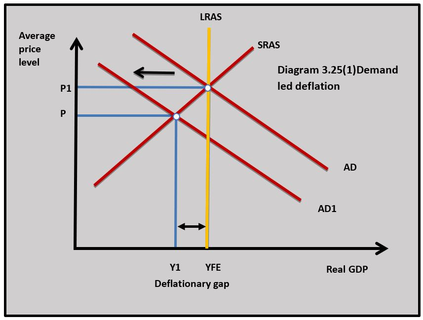
Deflation can occur because of a fall in aggregate demand and this typically occurs in a recession. The Japanese have experienced periods of deflation in the last 20 years caused by falling aggregate demand. Diagram 3.25(1) illustrates how a fall in aggregate demand from AD to AD1 leads to deflation as the average price level falls and there is a deflationary gap. Because this type of deflation occurs in a recession it is seen as damaging to the economy in terms of falling GDP and rising unemployment. Economists sometimes call this ‘bad deflation’.
Supply-side deflation
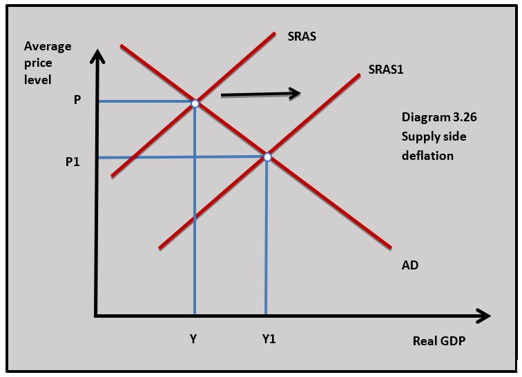
Deflation that occurs on the supply side arises when the aggregate supply curve shifts to the right and leads to a higher output at lower prices. Improvements in productivity in manufacturing have led to significant falls in prices in certain markets and this has had a ‘deflationary effect’ on the economy. In diagram 3.26 the short-run aggregate supply curve shifts from SRAS to SRAS1 and the average price level falls. This is often called ‘good deflation’ because it is associated with a higher level of real GDP.Consequences of deflation
The consequences of deflation depend to an extent on whether deflation is caused by changes in aggregate demand or supply.
Reduced growth and recession
If deflation is caused by falling aggregate demand, then it can lead to falling or even negative economic growth and rising unemployment. These are the negative consequences of a deflationary gap and they are often associated with a serious recession.
Falling current consumption
When prices are falling it is argued that households put off buying goods and services now because they believe they can wait to buy goods in the future when prices are lower. This fall in current consumption causes a further fall in aggregate demand and leads to more deflation.
Redistribution of income
Lenders gain at the expense of borrowers because the value of repayments rises when prices are falling. If you borrow $1000 now with 5 per cent deflation, the real value of the repayment will be $1050. This may mean firms and households are less willing to borrow and this reduces consumption and investment which in turn causes aggregate demand to fall.
The rise in spending power
As the price of goods falls consumers can buy more with their income. This is the benefit of supply-side or good deflation. Falling prices often apply to goods such as clothing, computers, TVs and mobile phones.
International competitiveness
If one country’s goods are falling in price relative to their trading partners, then this could increase that country's competitive advantage in international markets. It could lead to a rise in their exports and a fall in imports. Japan’s deflation over the last 20 years may well help its trading competitiveness.
Saudi Arabia is continuing to suffer from deflation with its CPI in negative territory for ten successive months. Last month’s consumer price index was at -0.3%. The consumer price index has fallen from 106.8 points to 106.4 points over the last year. The price of housing, water, electricity, gas and other fuels accounted for much of the fall in prices with a 4.2% drop from the previous year.
Economists believe the deflation in Saudi Arabia is due to falling aggregate demand and recession. The last two-quarters of GDP growth has been negative.
Questions
a. Outline the difference between disinflation and deflation. [2]
Disinflation is the fall in the rate of inflation in an economy. Deflation is a negative rate of inflation where there is a sustained fall in the general level of prices in an economy.
b. Using a diagram explain how deflation is being caused in Saudi Arabia. [4]
 According to the article, deflation is being caused by falling aggregate demand in Saudi Arabia. The economy is in recession so rising unemployment and falling consumption could be causing aggregate demand to fall.
According to the article, deflation is being caused by falling aggregate demand in Saudi Arabia. The economy is in recession so rising unemployment and falling consumption could be causing aggregate demand to fall.
c. Explain the impact deflation in Saudi Arabia might have on borrowing and international competitiveness. [4]
- As the average price level in Saudi Arabia falls borrowers will lose and lenders will gain because the real value of repayments increases and this might lead to less borrowing for consumption and investment.
- If deflation means that prices in Saudi Arabia are falling relative to prices in competing countries then Saudi Arabia's exports will become more price competitive.
Investigation
Research another country experiencing deflation and try to find out why their average price level is falling.
The conflict between macroeconomic objectives
Low inflation and low unemployment
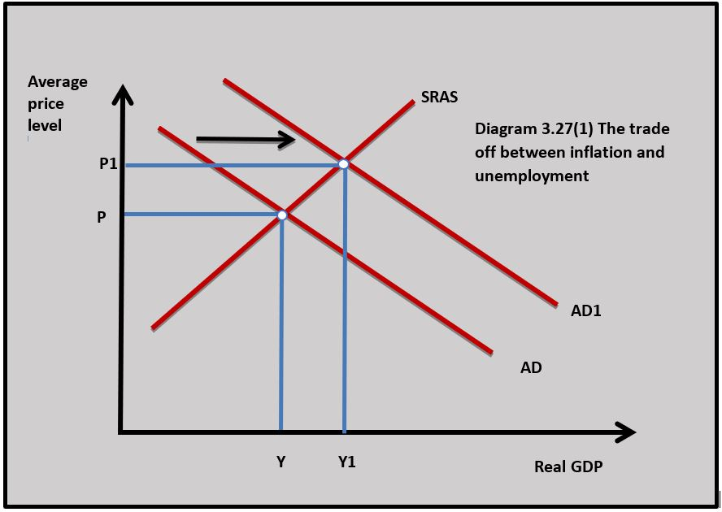
One of the main macroeconomic policy conflicts governments have is the aim of achieving low inflation and low unemployment at the same time. The conflict can be illustrated by changes in aggregate demand in diagram 3.27(1). When aggregate demand increases the national income rises from Y to Y1 and this is normally associated with a fall in unemployment. But the increase in aggregate demand will also lead to a rise in the average price level from P to P1 and an increase in the rate of inflation. The opposite occurs if aggregate demand falls leading to a fall in inflation but a rise in unemployment as national income falls.
The Phillips Curve
The nature of the Phillips curve
The Phillips curve describes the relationship between the rate of inflation and the rate of unemployment. It was established by the New Zealand-born economist William Phillips who studied the relationship between the rate of inflation and the rate of unemployment in the UK economy between 1861 and 1957.
Phillips used the UK data to establish that as the rate of inflation decreased the rate of unemployment increased and as the rate of inflation increased the rate of unemployment decreased. Diagram 3.27(2) illustrates the basic Phillips Curve.
Explaining the Phillips curve
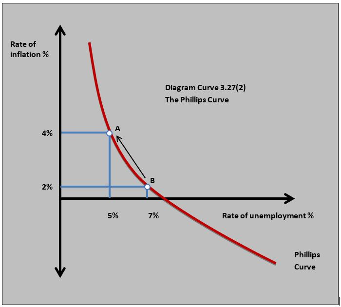
The negative relationship between the inflation rate and the rate of unemployment can be explained by aggregate demand and supply analysis. As aggregate demand increases from AD to AD1 in diagram 3.27(1) above, the national income increases leading to a fall in unemployment from 7 per cent to 5 per cent in diagram 2.27(2) as the demand for labour increases. This could be because of a fall in demand deficient unemployment. The rise in aggregate demand also leads to a rise in the average price from 2 per cent to 4 per cent in diagram 3.27(2) in the economy as demand-pull inflation increases the average price level.The Phillips curve only really works when aggregate demand changes. If there is a fall in aggregate supply then a rise in the rate of inflation may occur at the same time as a rise in unemployment as national income falls. Falling national income and rising inflation is sometimes referred to as stagflation.
Inquiry case example- The Phillips Curve in Ethiopia
Between 2000 and 2018 Ethiopia was one of the fastest-growing economies in the world according to a World Bank report. In 2000 Ethiopia was one of the poorest countries in the world with a GNI per capita of around $600 and more than 50% of the population lived in absolute poverty. Improvements in labour productivity because of rising investment changed all that and Ethiopia has become a modern dynamic economy. The rise in prosperity has, however, come at the cost of rising inflation with the current rate of inflation is running at over 15%. This is at a time when Ethiopian unemployment has fallen below 2%. High aggregate demand combined with a ‘tight’ labour market has led to strong demand-pull inflation.
Questions
a. Outline what the Phillips curve shows. [2]
The Phillips curve shows the negative relationship between inflation and unemployment.
b. Using an AD/AS diagram, explain why there is a negative relationship between inflation and unemployment. [4]
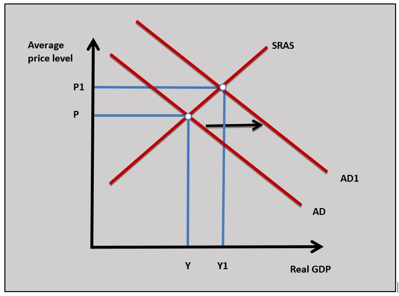
The AD/AS diagram shows how an increase in aggregate demand leads to an increase in real GDP which reduces unemployment and leads to an increase in inflation through a rise in the average price level.c. Using a Phillips curve diagram, explain why the current economic conditions in Ethiopia might account for the Phillips curve relationship. [4]
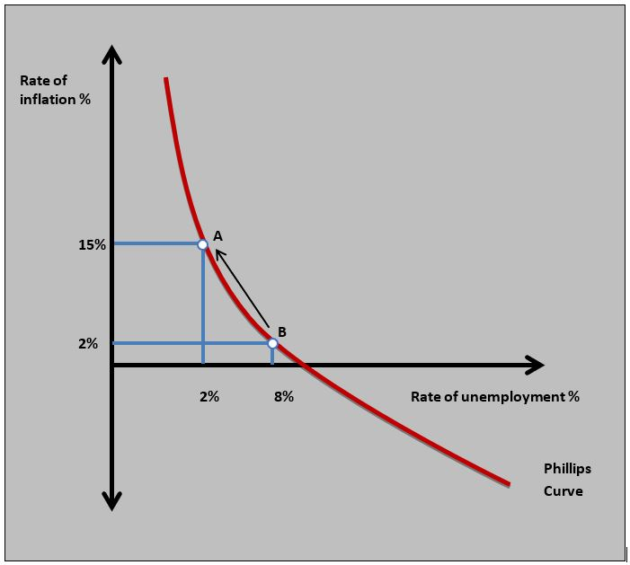
The Ethiopian economy is experiencing strong economic growth which leads to a fall in employment as more workers are hired by firms that are increasing output. As unemployment falls in the Ethiopian economy to 2% there are pressures for business costs to rise and this leads to a rise in inflation to 15%. This is shown in the Phillips curve diagram.Investigation
Research into another country that shows the characteristics of the Phillips curve.Policy use of the Phillips Curve
The Phillips Curve was used by policymakers to guide demand-side fiscal policy policies in the 1960s and 70s. If governments saw a rise in the rate of unemployment, they would use expansionary fiscal policy to try and reduce unemployment and this would be traded off against higher inflation. Similarly, if inflation was too high contractionary fiscal policy would be used and falling inflation would be traded off against higher unemployment. This was called ‘fine tuning’ the economy.
The Long-Run Phillips Curve
The Phillips Curve relationship broke down in the 1970s when many developed economies started to experience rising inflation and rising unemployment – Stagflation. Monetarist and Neo-Classical Economist tried to explain this by using the theory of the Long Run Phillips Curve.
The Long-Run Phillips Curve was based on the principle of the natural rate of unemployment which is covered in chapter 3.3(2). The natural rate of unemployment is important in understanding the long-run Phillips curve because the theory is based on the assertion that unemployment will always return to the natural rate in the long run.
Monetarist Economists also referred to the natural rate of unemployment as the Non(N) Accelerating (A) Inflation (I) Rate (R) of Unemployment (U) – NAIRU. In other words, if unemployment is at this level the rate of inflation does not increase. This rate of unemployment is shown in diagram 3.27(3).
Explaining the breakdown
This is how Monetarists explain the breakdown of the Phillips Curve:
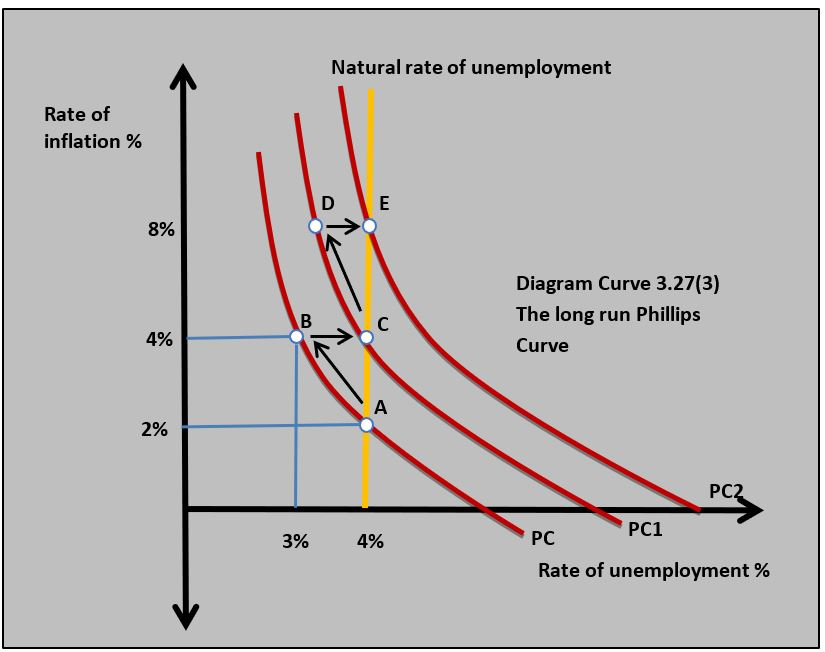
- Monetarist economists believed that the traditional Phillips Curve is a short-run Phillips curve. The economy starts on Phillips curve PC with 2 per cent inflation and the natural rate of unemployment of 4 per cent at point A in diagram 3.27(3).
- The government decides this rate of unemployment is too high and uses expansionary fiscal policy to reduce it by increasing government spending and cutting taxes. This works in the short run and unemployment falls from 4 per cent to 3 per cent, and the rate of inflation rises from 2 per cent to 4 per cent at point B.
- Monetarists believe that when inflation rises to 4 per cent for any period of time it becomes established in the economy and becomes the expected rate of inflation by households and firms. They then build in the expected inflation rate into their decision making and the rate of inflation stays at 4 per cent.
- Over time the rate of unemployment drifts back to the natural rate because some workers find their real wages are eroded by the higher rate of inflation and leave their jobs. The economy now moves to point C on diagram 3.27(3) with 4 per cent inflation and 4 per cent unemployment.
- After a period of time, the government again believes the rate of unemployment is unacceptably high and once again uses expansionary fiscal policy to reduce it. The economy is now on PC1 and the rate of unemployment falls below 4 per cent again and the inflation rate rises to 8 per cent as aggregate demand rises. The economy is now at point D in diagram 3.27(3).
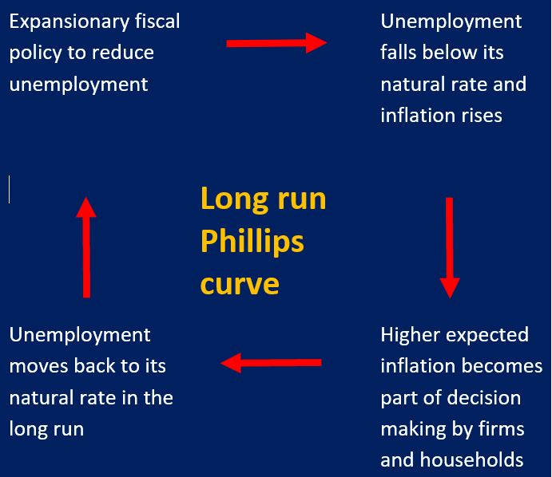
- The 8 per cent rate of inflation becomes expected by firms and households and in the long-run unemployment drifts back to its natural rate of 4 per cent at point E in diagram 3.27(3).
- This process continues each time the government uses expansionary fiscal policy to reduce unemployment and the economy experiences higher and higher inflation with no long-term fall in unemployment.
- It is important to remember that this analysis of the breakdown of the Phillips Curve took place after it had happened, and governments were unaware this process was occurring. Policymakers just thought over time (normally when there was an election looming) that unemployment needed to be reduced.
The implication of the Long Run Phillips Curve
One of the implications of the Long Run Phillips Curve is for macroeconomic policymaking. If a government tries to use expansionary demand-side policies to reduce unemployment below its natural rate it will lead to higher inflation in the long run with no reduction in unemployment. This means governments need to use supply-side policies to reduce the natural rate of unemployment.
Episodes of hyperinflation in Zimbabwe and Venezuela in the last twenty years can be used to highlight the economic problem of scarcity at a macroeconomic level. The causes of hyperinflation in both countries are complex but one of the simple realities of hyperinflation is a chronic shortage of goods and services available for consumers to buy - scarcity. This could be seen in Zimbabwe and Venezuela where supermarkets had empty shelves and there was very little for people to purchase. When this happens prices rise very quickly especially when the government prints more and more money for the population to buy goods and services.
Research into a market in Zimbabwe or Venezuela in the period of hyperinflation where scarcity led to rising prices.
Country A’s rate of inflation changes from 2.1% in 2019 to 0.8% in 2020. Which of the following is not true?
This is not deflation because the average price level is still rising even though the rate of inflation has fallen.
Using the following price index data for country X, which of the following is the rate of inflation in 2020?:
Country X price index 2019 108.6
Country X price index 2020 111.3
111.3 - 108.6 / 108.6 x 100 = 2.49%
Which of the following is least likely to be a problem of measuring inflation?
The price of goods rising in the index is not a problem of measuring inflation.
Which of the following is the most likely to cause demand-pull inflation?
A rise in household wealth could increase consumption and aggregate demand causing demand-pull inflation.
Which of the following is least likely to be a cause of cost-push inflation?
An appreciation in a country's exchange rate will reduce import prices and cost-push inflation.
Which of the following is the least likely to be a consequence of high inflation in a country?
Inflation can cause a redistribution of income from lenders to borrowers.
Which of the following is least likely to be a cause of deflation in a country?
A depreciation in a country's exchange rate increases import prices.
Which of the following is least likely to occur if a country is experiencing deflation?
If the rate of increase in the consumer price index falls the average price level is still increasing (inflation) but at a slower rate.
The central bank of a country can reduce inflationary pressure if an increase in interest rates leads to a decrease in which of the following?
An increase in interest rates could lead to a decrease in household borrowing as interest payments on loans increase.
Which of the following is least likely to lead to a rise in inflation?
A rise in the exchange rate leads to a fall in import prices which reduces inflationary pressures.
 Twitter
Twitter
 Facebook
Facebook
 LinkedIn
LinkedIn